Slide text
Speaker notes / extracted notes
Show slide thumbnails
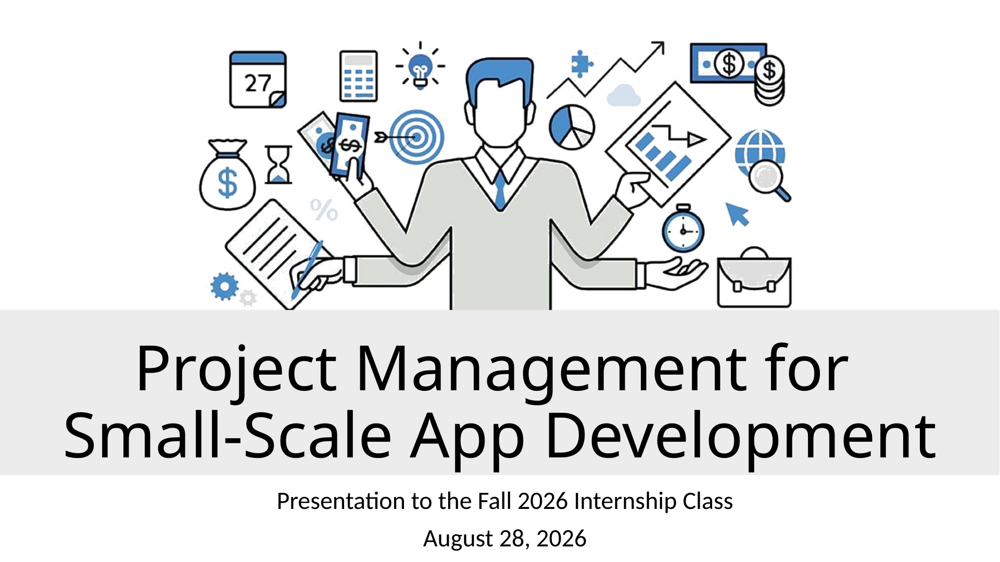
1. Project Management for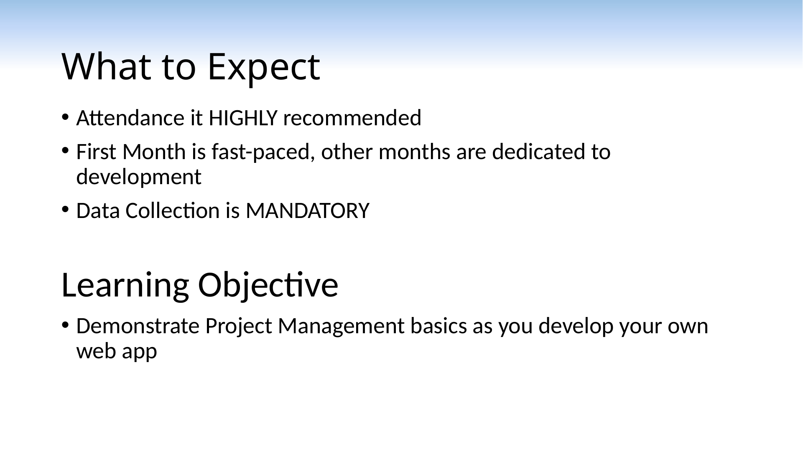
2. What to Expect 3. Student Intake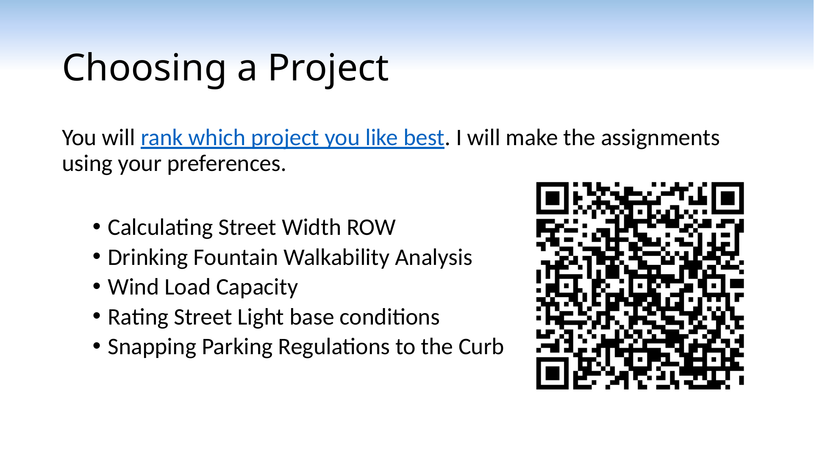
4. Choosing a Project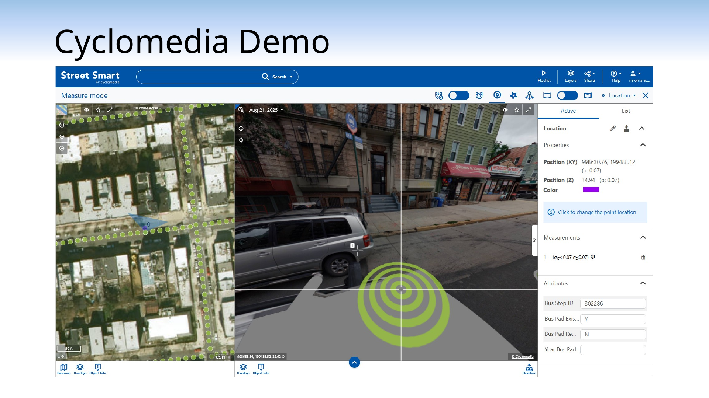
5. Cyclomedia Demo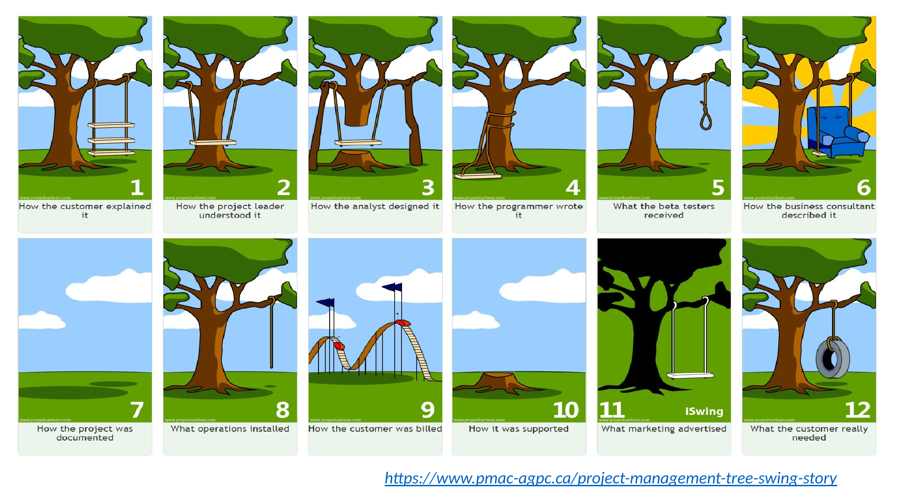
6. https://www.pmac-agpc.ca/project-management-t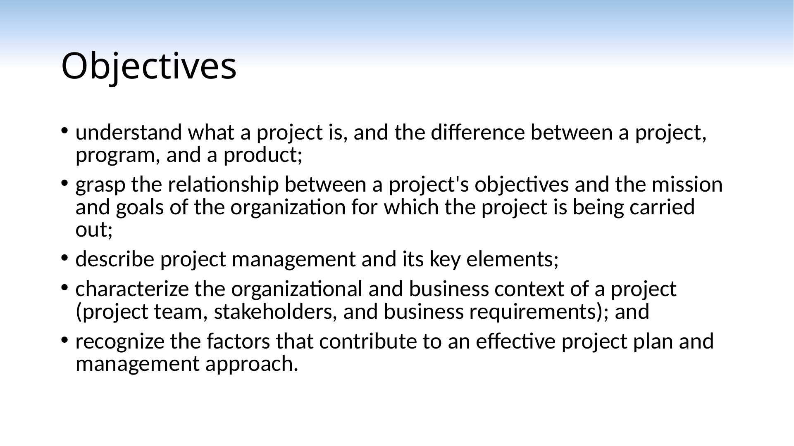
7. Objectives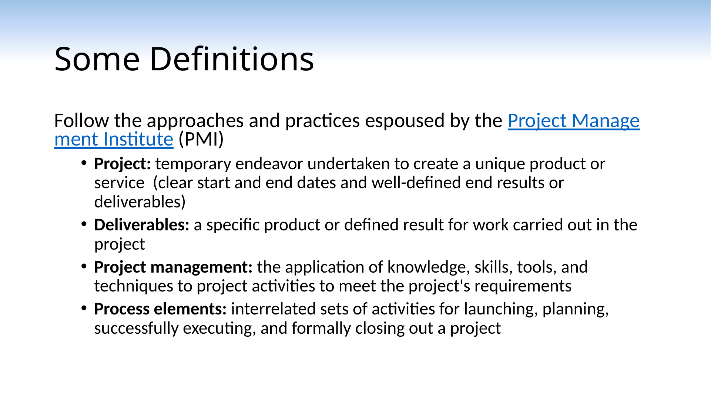
8. Some Definitions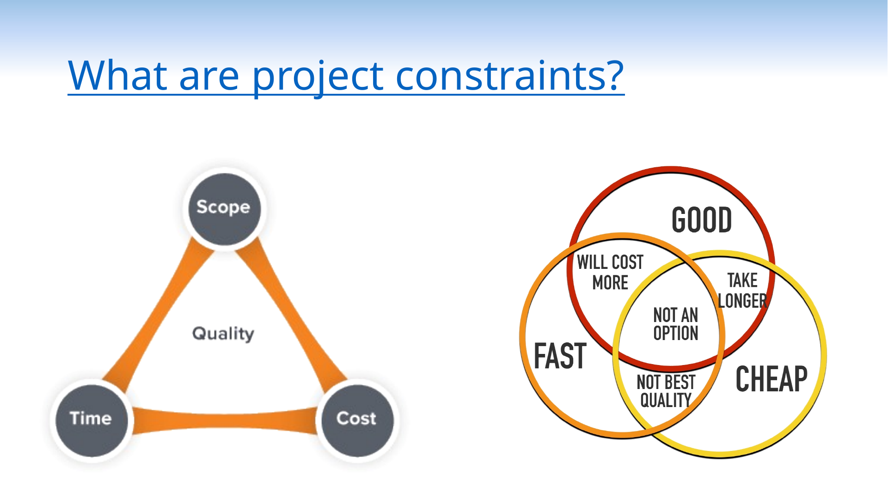
9. What are project constraints?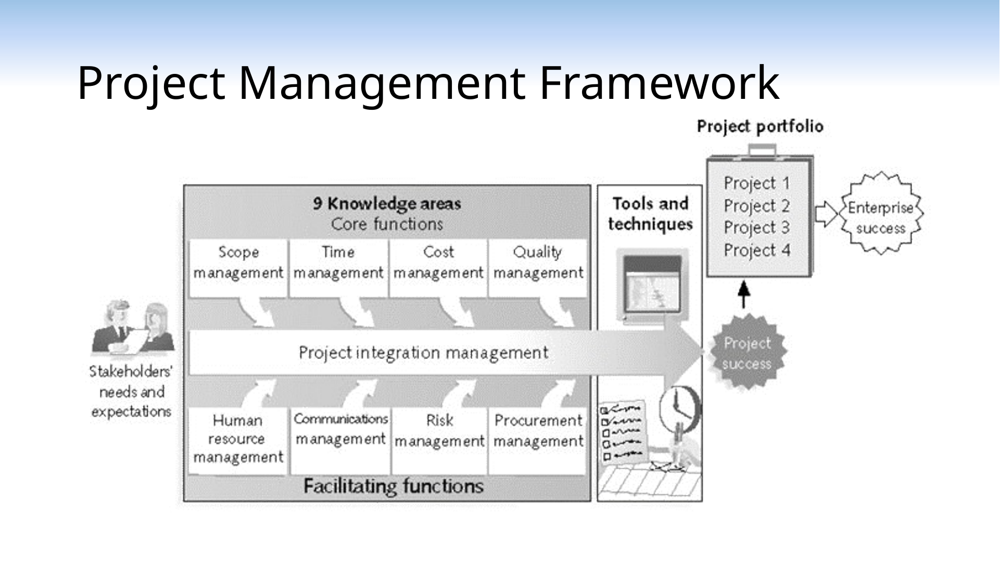
10. Project Management Framework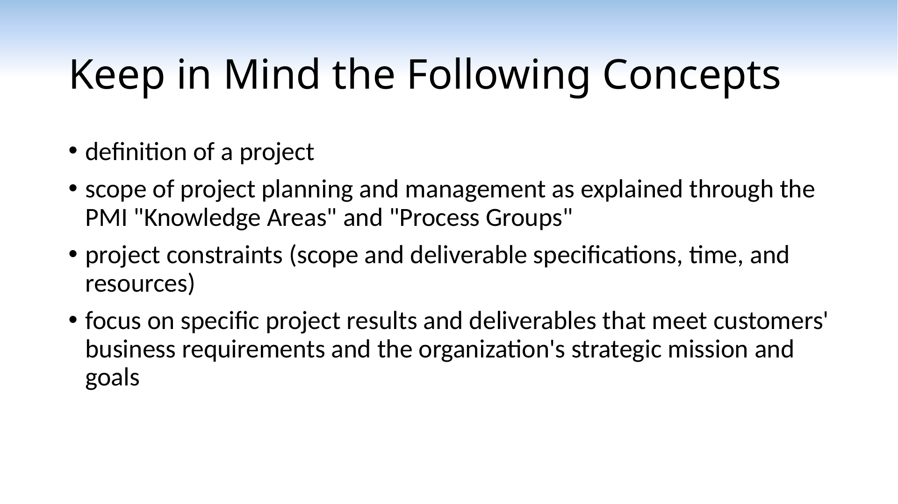
11. Keep in Mind the Following Concepts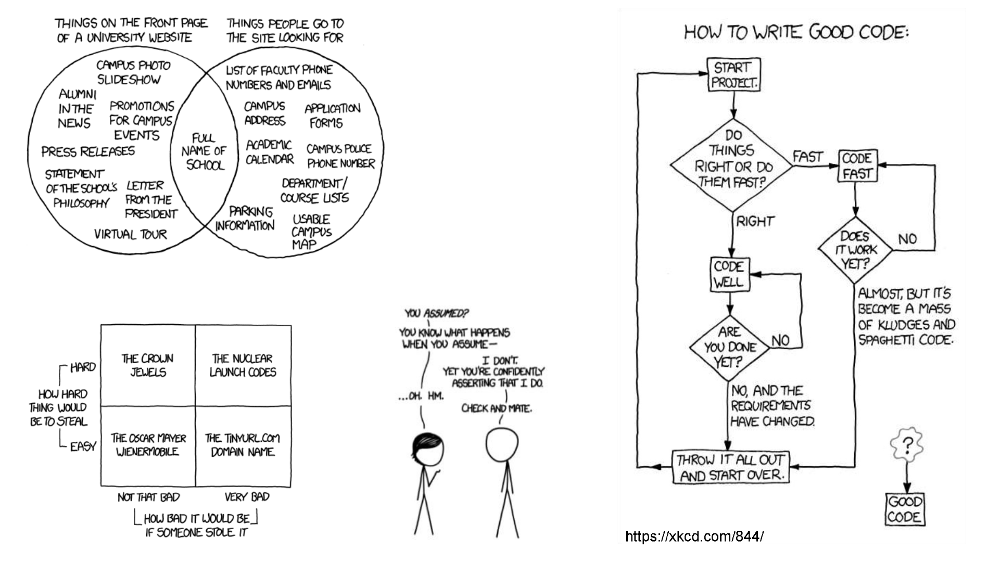
12. Assignment: Choose your project